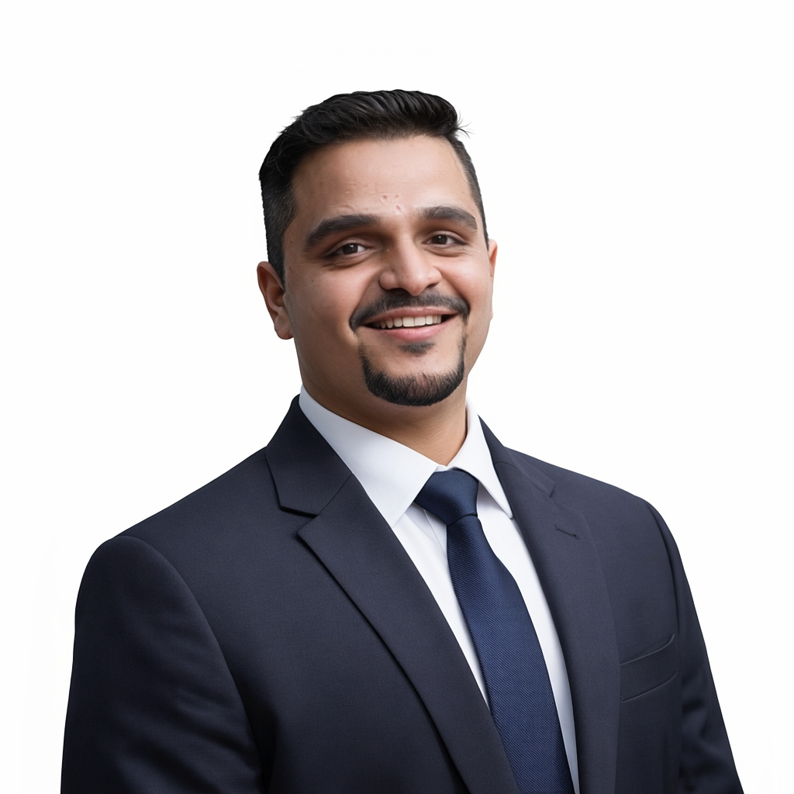

- Challenge
- SABC needed its channels moved onto the BroadView BMS (scheduling, traffic and ad sales) while daily broadcasts carried on.
- Approach
- As senior SME and project lead on site, I ran the whole migration: planning, configuration, data migration, UAT and cutover, side by side with SABC's operations teams.
- Result
- Live in December 2024, with the national broadcaster's channels scheduled, trafficked and monetised on BroadView.

I put broadcasters on air, and keep them there.
15 years taking broadcast platforms from pre-sales to go-live and into daily operations. 12 go-lives on four continents, from Sony in 2012 to SABC in 2024.
Open to conversations about media technology leadership
ON AIR WITH
From first meeting to on air.
How I work
Eight steps, every go-live.
Every go-live I've run follows the same eight steps. Scroll to watch a channel schedule come together.
Skip the steps- Step 1
Pre-sales
Understand the channel before selling anything: how it schedules, sells and bills today, and where it loses time or money.
- Step 2
Requirements
BRDs, SOWs and a clear scope. The grid is drawn before anything is built, so nobody argues about it later.
- Step 3
Configuration
The BMS is set up around the channel's own workflows: programmes, formats, rights windows and EPG.
- Step 4
Ad sales and traffic
Breaks, spots and pricing go in, so every second of airtime can be sold, scheduled and billed.
- Step 5
Migration
Years of schedules, contracts and rights move across from the old system without losing a record.
- Step 6
Testing
UAT with the people who will run it every day. Nothing goes live until they sign it off.
- Step 7
Go-live
Cutover while the channel stays on air. SABC moved its channels to BroadView in December 2024 without going dark.
- Step 8
Operations
The part most vendors skip. HA/DR, automation and AI-assisted support keep it running at 99.9% uptime, years after launch.
My journey, five roles at UTO Solutions
12 go-lives on four continents.
Every one on site, with the people who run the channel every day.
India 5 go-lives
Sony Entertainment Television, Viacom18, Network18, Reliance Big Magic, Tata Sky. Now the RightsU rollout at JioStar.
UAE 3 go-lives
Moby Media Group and Alliance Media / Urdu1 in Dubai, Image Nation / Quest Arabia in Abu Dhabi.
South Africa 3 go-lives
Econet Media / Kwesé TV, Sentech's FreeVision OTT launch, and SABC, the national broadcaster.
Papua New Guinea 1 go-live
EMTV in Port Moresby, 2013.
USA live now
Warner Bros. Discovery AdTech operations, 50+ applications.
Track record
The as-run log.
In broadcast, the as-run log records what actually went to air. This is mine.
- years in media technology
- 15+
- go-lives on four continents
- 12
- uptime delivered with HA/DR
- 99.9%
- lower operating costs through automation
- 40%
| Year | Client | What | Where |
|---|---|---|---|
| 2025–now | Warner Bros. DiscoveryON AIR | AdTech operations, 50+ applications | USA |
| 2025–now | JioStarON AIR | RightsU rights management rollout | India |
| 2024 | SABC | BroadView BMS, national broadcaster | Johannesburg, South Africa |
| 2024 | Sentech Media | FreeVision OTT launch | Johannesburg, South Africa |
| 2016–17 | Econet Media / Kwesé TV | BMS go-live, pan-African broadcaster | Johannesburg, South Africa |
| 2015 | Tata Sky / Tata Play | BMS deployment | Delhi and Mumbai, India |
| 2015 | Moby Media Group | BMS deployment | Dubai, UAE |
| 2015 | Alliance Media / Urdu1 | BMS deployment | Dubai, UAE |
| 2015 | Image Nation / Quest Arabia | BMS deployment | Abu Dhabi, UAE |
| 2013 | Network18 | BMS deployment | Mumbai, India |
| 2013 | Reliance Big Magic | BMS deployment | Surat and Mumbai, India |
| 2013 | EMTV | BMS deployment | Port Moresby, Papua New Guinea |
| 2012 | Viacom18 | BMS deployment | Mumbai, India |
| 2012 | Sony Entertainment Television | BroadView rollout, multi-channel | Mumbai, India |
Case studies
How the work gets done.
- Challenge
- On-premise hosting was limiting uptime, disaster recovery and access for teams spread around the world.
- Approach
- Led BroadView's move to AWS: re-architected hosting and HA/DR, opened secure global access, and shifted infrastructure spend from CAPEX to OPEX.
- Result
- Better uptime and disaster recovery, and the cloud foundation behind a roughly 40% cut in operating costs.
- Challenge
- Routine questions were eating specialist engineering time and slowing support for clients who broadcast around the clock.
- Approach
- Rolled out AI-assisted support workflows, a support chatbot and a self-service client portal with AI search for common issues.
- Result
- About 30% faster responses, fewer manual escalations, and clients now fix routine issues without raising a ticket.
And 18 solutions designed and shipped
- Broadcast scheduling and traffic
- TRAI violation reporting
- EPG generator for DTH
- SAP integration
- Amortisation and revenue reporting
- Invoicing
- Geo-targeting and geo-advertising
- On-demand scheduler for OTT
- MAM automation (Avid, Dalet, Flex)
- SCTE-35 local ad insertion
- Secondary element overlays
- Music and radio scheduling
- Secondary event ID tracker
- Target vs achievement analytics
- BroadView–Pebble Beach integration
- Content and rights migration
- BondFlex MAM integration
- RMS rights clearance
Toolkit
Broadcast, AdTech, enterprise, AI, and the paperwork to prove it
AdTech and BMS1 of 7
Broadcast management
- BroadView
- RightsU
- SSAI / CSAI
- SCTE-35
- FAST, CTV
- EPG
- Revenue assurance
Enterprise2 of 7
ERP and SAP
- SAP
- Finance and billing
- Amortisation
- Contract management
- BI dashboards
Broadcast3 of 7
Playout and MAM
- Dalet, Flex, Avid, Xytech
- Imagine, Pebble Beach
- Harmonic, iTX, Grass Valley
- OTT, CDN, DRM
Cloud and data4 of 7
Infrastructure
- AWS Elemental, MediaLive
- Azure
- HA/DR
- SQL, Firebird
- REST APIs, PowerShell
Delivery5 of 7
Product and design
- JIRA, Asana, ClickUp
- Figma, Adobe XD
- Axure, Balsamiq
- Indigo Studio
- Lucidchart, Visio
Leadership6 of 7
Running the business
- Product strategy, P&L
- Pre-sales
- BRD, SOP, SOW
- Vendor sourcing
- Change management
- C-suite reviews
Credentials7 of 7
Certified and qualified
- Certified Scrum Product Owner (CSPO®)Scrum Alliance · 2023
- Diploma in Software Engineering (GNIIT)NIIT Mumbai · 2011
- Bachelor of CommerceMumbai University, Thakur College · 2011
I bridge traditional broadcast with intelligent, scalable infrastructure, from legacy BMS to AI-powered AdTech, so content providers can adapt, learn and grow.
Planning a go-live? Let's talk.
One conversation, no obligation. Media technology leadership, broadcast platforms and strategic partnerships.
kayozm@gmail.comMumbai, working globally